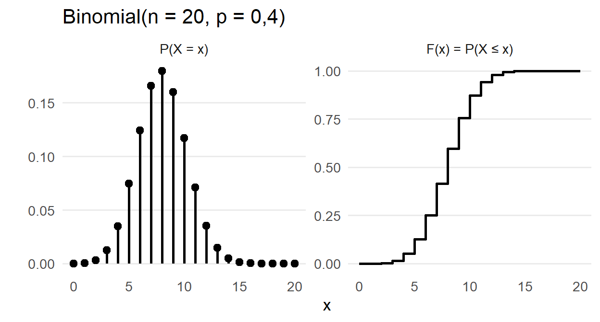
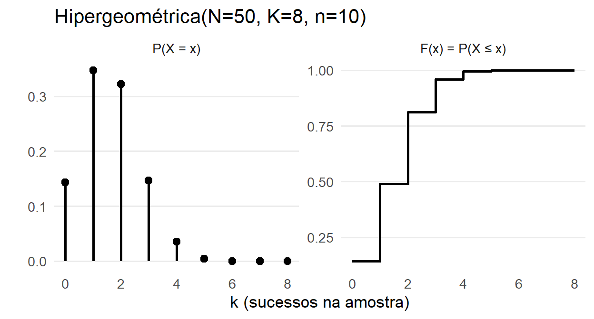
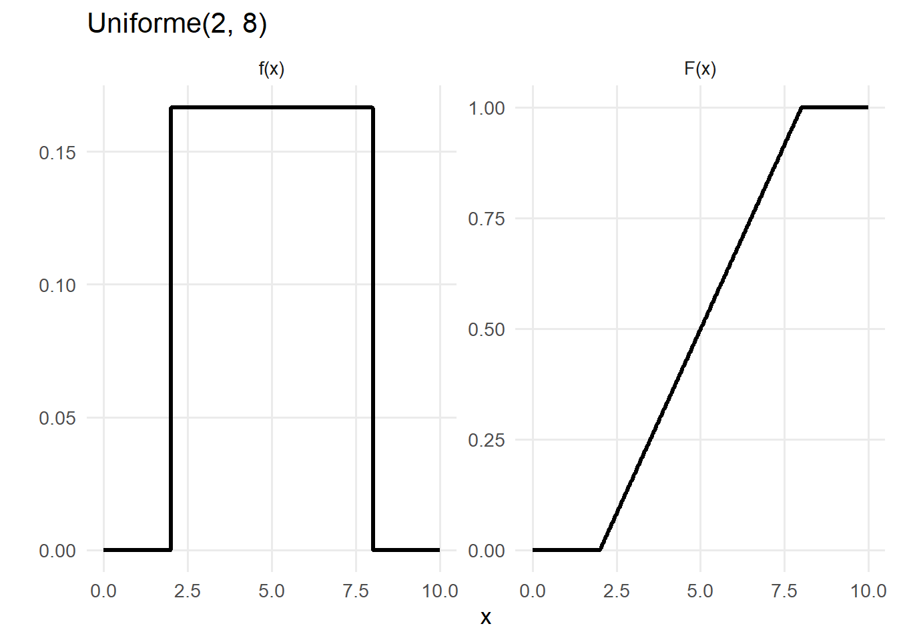
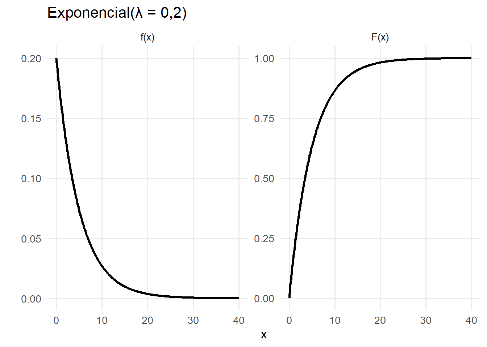
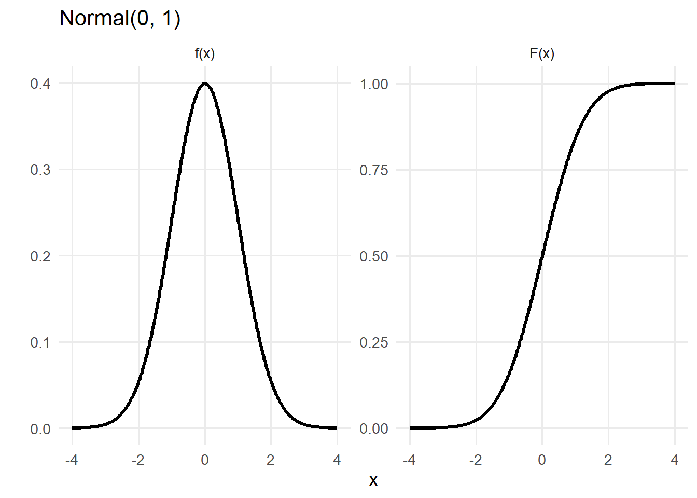
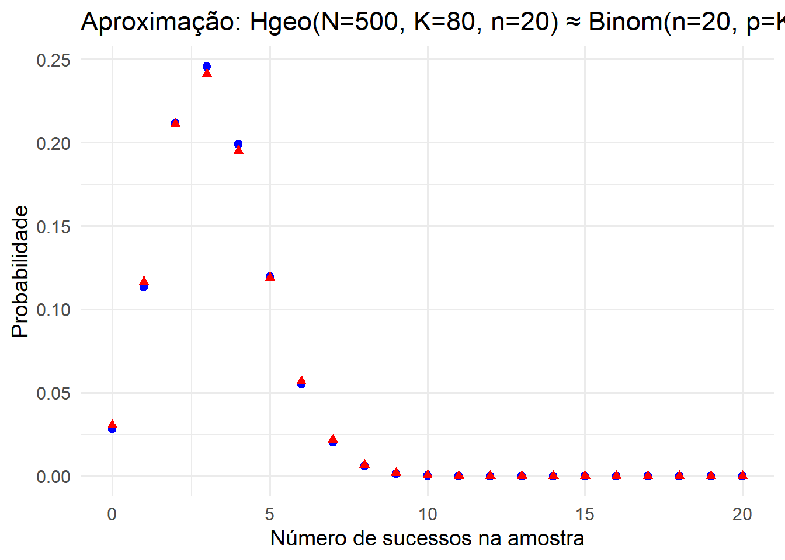
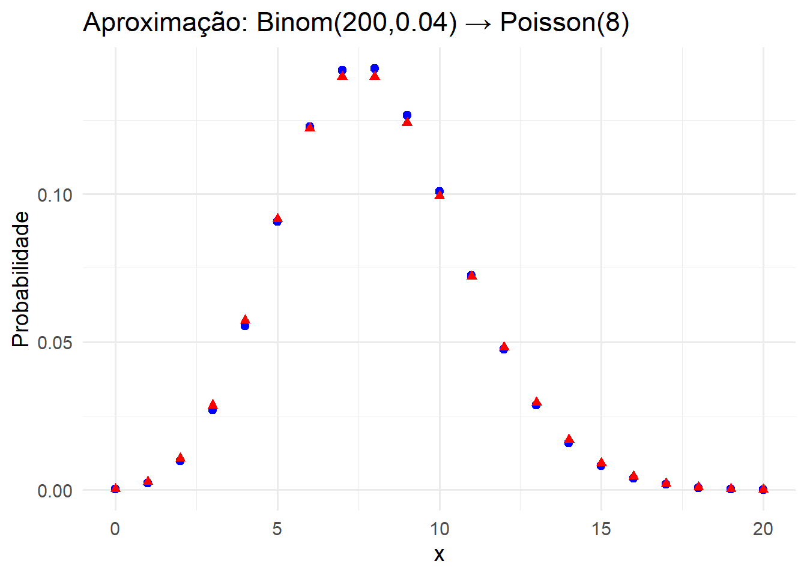
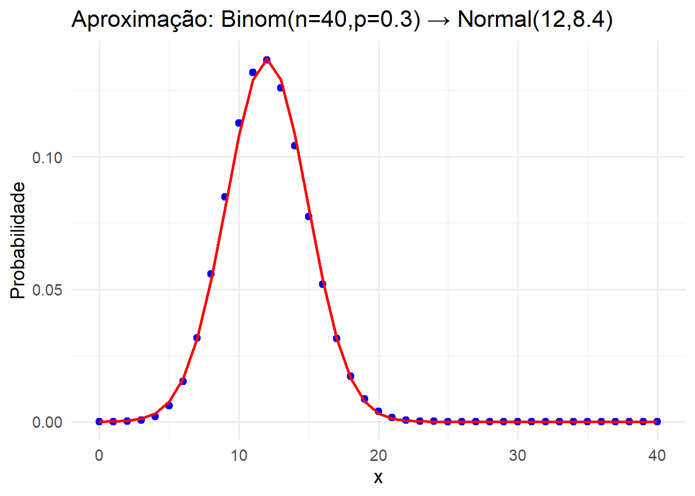
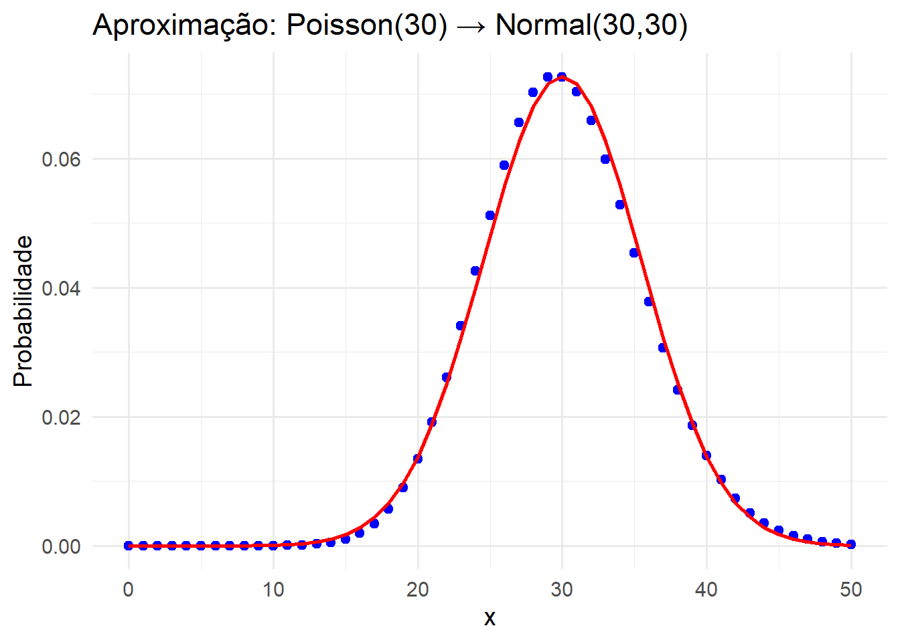

Revisão Probabilidade I
1 Variáveis Aleatórias (VAs)
Definição. Uma variável aleatória é uma função que associa a cada resultado do experimento um número real.
Discretas: suporte finito/enumerável (ex.: 0,1,2,…). Caracterizam-se por função de probabilidade \(P(X=x_i) =p(x_i) =p_i\). Uma função de probabilidade satisfaz \(0 \le p_i \le 1\) e \(\sum_{i=1} p_i = 1\)
Contínuas: suporte intervalar. Caracterizam-se por densidade \(f(x)\) tal que \(P(a<X< b)=\int_a^b f(x)\,dx\). Uma função densidade satisfaz \(f(x) \ge 0\) e \(\int_{-\infty}^{\infty} f(x)\, dx = 1\).
A função de distribuição é \(F(x)=P(X\le x)\). Em ambos os casos, \(F(x)\) é não-decrescente e \(\lim_{x\to-\infty}F(x)=0\), \(\lim_{x\to\infty}F(x)=1\).
2 Momentos
Seja \(X\) uma varável aleatória.
- Esperança: \(E[X]=\sum_x x\,p(x)\) (discreta) ou \(E[X]=\int_{-\infty}^{\infty} x f(x)\,dx\) (contínua).
- Variância: \(Var(X)=E\!\left[(X-E[X])^2\right]=E[X^2]-E[X]^2\).
- Desigualdade de Jensen (convexa \(\phi\)): \(\phi(E[X])\le E[\phi(X)]\).
- Propriedades úteis: linearidade \(E[aX+b]=aE[X]+b\); \(Var(aX+b)=a^2 Var(X)\).
3 Distribuições Discretas
3.1 Bernoulli \((p)\)
Interpretação: 1 sucesso/fracasso em único ensaio.
| Item | Expressão |
|---|---|
| Suporte | \(x\in\{0,1\}\) |
| Parâmetro | \(0<p<1\) |
| Função de probabilidade \(p(x)\) | \(p^x(1-p)^{1-x}\) |
| Distribuição \(F(x)\) | \(0\) se \(x<0\); \(1-p\) se \(0\le x<1\); \(1\) se \(x\ge1\) |
| Esperança \(E[X]\) | \(p\) |
| Variância \(Var(X)\) | \(p(1-p)\) |
Mostrar demonstração
A variável Bernoulli assume valores \(0\) e \(1\), com \(P(X=1)=p\) e \(P(X=0)=1-p\).
Esperança
\[ E(X)=0(1-p)+1\cdot p = p. \]
Segundo momento
\[ E(X^2)=0^2(1-p)+1^2\cdot p = p. \]
Variância
\[ \mathrm{Var}(X)=E(X^2)-[E(X)]^2 = p - p^2 = p(1-p). \]
Exemplo: Um alarme dispara corretamente com probabilidade \(p = 0{,}92\). Seja \(X\) = 1 se o alarme dispara corretamente, 0 caso contrário.
- Calcule \(P(X=1)\) e \(P(X=0)\).
- Calcule \(E[X]\) e interprete.
Solução:
- \(P(X=1)=0{,}92\)
- \(P(X=0)=0{,}08\)
\[ E[X]=p=0{,}92 \]
Interpretação: o alarme funciona corretamente em 92% dos acionamentos.
3.2 Binomial \((n,p)\)
Interpretação: número de sucessos em \(n\) ensaios independentes, prob. \(p\).
| Item | Expressão |
|---|---|
| Suporte | \(k=0,1,\dots,n\) |
| Parâmetros | \(n\in\mathbb{N}\), \(0<p<1\) |
| \(p(k)\) | \(\binom{n}{k}p^k(1-p)^{n-k}\) |
| \(F(k)\) | \(\sum_{j=0}^{k}\binom{n}{j}p^j(1-p)^{n-j}\) |
| \(E[X]\) | \(np\) |
| \(Var(X)\) | \(np(1-p)\) |

Mostrar demonstração
Considere \(X \sim \text{Binomial}(n,p)\), isto é, \[ P(X = k) = \binom{n}{k} p^k (1-p)^{n-k}, \quad k = 0,1,\dots,n. \]
Vamos demonstrar:
- \(E(X) = np\)
- \(\mathrm{Var}(X) = np(1-p)\)
usando
\[ E(X) = \sum_{k=0}^n k\,P(X=k), \qquad \mathrm{Var}(X) = E(X^2) - [E(X)]^2. \]
Cálculo de E(X)
Pela definição: \[ E(X) = \sum_{k=0}^n k\,P(X=k) = \sum_{k=0}^n k \binom{n}{k} p^k (1-p)^{n-k}. \]
Note que o termo com \(k=0\) é zero (pois tem um fator \(k\)), então podemos começar em \(k=1\): \[ E(X) = \sum_{k=1}^n k \binom{n}{k} p^k (1-p)^{n-k}. \]
Usamos agora a identidade combinatória \[ k \binom{n}{k} = n \binom{n-1}{k-1}. \]
Substituindo: \[ E(X)= \sum_{k=1}^n n \binom{n-1}{k-1} p^k (1-p)^{n-k}. \]
Colocamos \(n\) em evidência: \[ E(X)= n \sum_{k=1}^n \binom{n-1}{k-1} p^k (1-p)^{n-k}. \]
Agora fazemos a mudança de índice \(j = k-1\):
- quando \(k = 1\), \(j = 0\);
- quando \(k = n\), \(j = n-1\);
- \(k = j + 1\).
Então: \[ E(X)= n \sum_{j=0}^{n-1} \binom{n-1}{j} p^{j+1} (1-p)^{n-(j+1)}. \]
Reorganizando as potências: \[ p^{j+1} = p \cdot p^j,\qquad n-(j+1) = (n-1)-j, \] obtemos: \[ E(X)= n p \sum_{j=0}^{n-1} \binom{n-1}{j} p^{j} (1-p)^{(n-1)-j}. \]
Repare que a soma \[ \sum_{j=0}^{n-1} \binom{n-1}{j} p^{j} (1-p)^{(n-1)-j} \] é exatamente o desenvolvimento binomial de \[ (p + (1-p))^{n-1} = 1^{n-1} = 1. \]
Portanto: \[ E(X) = n p \cdot 1 = np. \]
Cálculo de \(E(X^2)\)
Pela definição: \[ E(X^2) = \sum_{k=0}^n k^2\,P(X=k) = \sum_{k=0}^n k^2 \binom{n}{k} p^k (1-p)^{n-k}. \]
Truque clássico: escrever \[ k^2 = k(k-1) + k. \]
Então: \[ \begin{aligned} E(X^2) &= \sum_{k=0}^n \big[ k(k-1) + k \big]\binom{n}{k} p^k (1-p)^{\,n-k} \\[6pt] &= \sum_{k=0}^n k(k-1)\binom{n}{k} p^k (1-p)^{\,n-k} \;+\; \sum_{k=0}^n k\binom{n}{k} p^k (1-p)^{\,n-k}. \end{aligned} \]
Chamemos:
- \(A = \sum_{k=0}^n k(k-1)\binom{n}{k} p^k (1-p)^{n-k}\)
- \(B = \sum_{k=0}^n k\binom{n}{k} p^k (1-p)^{n-k}\)
Logo, \(E(X^2) = A + B\).
Mas repare que \(B = E(X)\), que já calculamos: \[ B = E(X) = np. \]
Falta calcular \(A\).
Cálculo de \(A\)
Usamos agora a identidade: \[ k(k-1)\binom{n}{k} = n(n-1)\binom{n-2}{k-2}. \]
Então: \[ A = \sum_{k=0}^n k(k-1)\binom{n}{k} p^k (1-p)^{n-k} = \sum_{k=2}^n n(n-1)\binom{n-2}{k-2} p^k (1-p)^{n-k}. \]
Podemos tirar \(n(n-1)\) em evidência: \[ A = n(n-1)\sum_{k=2}^n \binom{n-2}{k-2} p^k (1-p)^{n-k}. \]
Agora faça a mudança de índice \(j = k-2\):
- quando \(k = 2\), \(j = 0\);
- quando \(k = n\), \(j = n-2\);
- \(k = j + 2\).
Substituindo: \[ A = n(n-1)\sum_{j=0}^{n-2} \binom{n-2}{j} p^{j+2} (1-p)^{n-(j+2)}. \]
Reorganizando as potências: \[ p^{j+2} = p^2 p^j, \qquad n-(j+2) = (n-2)-j, \] temos: \[ A = n(n-1)p^2 \sum_{j=0}^{n-2} \binom{n-2}{j} p^{j} (1-p)^{(n-2)-j}. \]
A soma é novamente um binômio: \[ \sum_{j=0}^{n-2} \binom{n-2}{j} p^{j} (1-p)^{(n-2)-j} = (p + (1-p))^{n-2} = 1^{n-2} = 1. \]
Portanto: \[ A = n(n-1)p^2. \]
Conclusão para \(E(X^2)\)
Lembrando que:
- \(A = n(n-1)p^2\)
- \(B = np\)
temos: \[ E(X^2) = A + B = n(n-1)p^2 + np. \]
Cálculo de \(\mathrm{Var}(X)\)
Agora usamos: \[ \mathrm{Var}(X) = E(X^2) - [E(X)]^2. \]
Já temos:
- \(E(X^2) = n(n-1)p^2 + np\)
- \(E(X) = np\)
Logo: \[ \mathrm{Var}(X) = \big(n(n-1)p^2 + np\big) - (np)^2. \]
Agora expandimos: \[ (np)^2 = n^2 p^2, \] então: \[ \mathrm{Var}(X) = n(n-1)p^2 + np - n^2 p^2. \]
Note que \[ n(n-1)p^2 = (n^2 - n)p^2, \] então: \[ \mathrm{Var}(X) = (n^2 - n)p^2 + np - n^2 p^2 = -n p^2 + np = n p (1-p). \]
Logo,
Para \(X \sim \text{Binomial}(n,p)\), \[ E(X) = np, \qquad \mathrm{Var}(X) = np(1-p). \]
Exemplo: A probabilidade de um cliente comprar um produto é \(p=0{,}3\). Em um dia, 20 clientes entram na loja. Seja \(X\) = número de compras.
- Calcule \(P(X=8)\).
- Calcule \(E[X]\).
Solução:
\[ P(X=8)=\binom{20}{8}(0{,}3)^8(0{,}7)^{12}\approx 0{,}053 \]
\[ E[X]=np=20\cdot 0{,}3 = 6 \]
3.3 Geométrica \((p)\)
Convenção usada: \(X\) = número de ensaios até o 1º sucesso (apoio \(1,2,\dots\)).
| Item | Expressão |
|---|---|
| \(p(k)\) | \(p(1-p)^{k-1}\) |
| \(F(k)\) | \(1-(1-p)^k\) |
| \(E[X]\) | \(1/p\) |
| \(Var(X)\) | \((1-p)/p^2\) |
| Propriedade | Sem memória: \(P(X>s+t\mid X>t)=P(X>s)\) |

Mostrar demonstração
Considere \(X \sim \text{Geom}(p)\) com suporte \(k=1,2,\dots\), isto é, \[ P(X = k) = p(1-p)^{k-1}, \quad k = 1,2,\dots,\quad 0<p<1. \]
Vamos demonstrar que \[ E(X) = \frac{1}{p} \qquad \text{e} \qquad \mathrm{Var}(X) = \frac{1-p}{p^2}, \] usando as definições \[ E(X) = \sum_{k=1}^{\infty} k\,P(X=k), \qquad \mathrm{Var}(X) = E(X^2) - [E(X)]^2. \]
Cálculo de \(E(X)\)
Pela definição de esperança: \[ E(X) = \sum_{k=1}^{\infty} k\,P(X=k) = \sum_{k=1}^{\infty} k\,p(1-p)^{k-1}. \]
Colocamos o fator \(p\) em evidência: \[ E(X) = p \sum_{k=1}^{\infty} k (1-p)^{k-1}. \]
Para simplificar, definimos \[ r = 1-p. \]
Note que \(0<r<1\). Então a soma fica \[ E(X) = p \sum_{k=1}^{\infty} k r^{k-1}. \]
Agora usamos uma identidade clássica de séries: - Sabemos que, para \(|r|<1\), \[ \sum_{k=0}^{\infty} r^k = \frac{1}{1-r}. \]
Derivando em relação a \(r\): \[ \frac{d}{dr}\left(\sum_{k=0}^{\infty} r^k\right) = \sum_{k=0}^{\infty} k r^{k-1} = \frac{d}{dr}\left(\frac{1}{1-r}\right) = \frac{1}{(1-r)^2}. \]
Note que o termo \(k=0\) é zero, então \[ \sum_{k=1}^{\infty} k r^{k-1} = \frac{1}{(1-r)^2}. \]
Voltando à expressão de \(E(X)\): \[ E(X) = p \cdot \frac{1}{(1-r)^2}. \]
Lembrando que \(r = 1-p\), então \[ 1-r = 1 - (1-p) = p. \]
Logo: \[ E(X) = p \cdot \frac{1}{p^2} = \frac{1}{p}. \]
Cálculo de \(E(X^2)\)
Pela definição: \[ E(X^2) = \sum_{k=1}^{\infty} k^2 P(X=k) = \sum_{k=1}^{\infty} k^2 p(1-p)^{k-1} = p \sum_{k=1}^{\infty} k^2 r^{k-1}, \] com \(r = 1-p\).
Então precisamos do valor de \[ \sum_{k=1}^{\infty} k^2 r^{k-1}. \]
Usaremos de novo a série geométrica e suas derivadas.
Já sabemos: \[ \sum_{k=0}^{\infty} r^k = \frac{1}{1-r}. \]
Primeira derivada: \[ \sum_{k=1}^{\infty} k r^{k-1} = \frac{1}{(1-r)^2}. \]
Multiplicando por \(r\): \[ r \sum_{k=1}^{\infty} k r^{k-1} = \sum_{k=1}^{\infty} k r^{k} = \frac{r}{(1-r)^2}. \]
Derivando novamente: Vamos derivar a expressão \[ \sum_{k=1}^{\infty} k r^{k} \] em relação a \(r\): \[ \frac{d}{dr}\left(\sum_{k=1}^{\infty} k r^{k}\right) = \sum_{k=1}^{\infty} k^2 r^{k-1}. \]
Agora derivamos o outro lado: \[ \frac{d}{dr}\left(\frac{r}{(1-r)^2}\right) = \frac{(1-r)^2 - r\cdot 2(1-r)(-1)}{(1-r)^4}. \]
Simplificando o numerador: \[ (1-r)^2 + 2r(1-r) = (1 - 2r + r^2) + (2r - 2r^2) = 1 - r^2 = (1-r)(1+r). \]
Assim, \[ \frac{d}{dr}\left(\frac{r}{(1-r)^2}\right) = \frac{(1-r)(1+r)}{(1-r)^4} = \frac{1+r}{(1-r)^3}. \]
Portanto, \[ \sum_{k=1}^{\infty} k^2 r^{k-1} = \frac{1+r}{(1-r)^3}. \]
Voltando para \(E(X^2)\): \[ E(X^2) = p \cdot \frac{1+r}{(1-r)^3}. \]
Substituímos \(r=1-p\) e \(1-r=p\):
- \(1+r = 1 + (1-p) = 2-p\)
- \((1-r)^3 = p^3\)
Então: \[ E(X^2)= p \cdot \frac{2-p}{p^3} = \frac{2-p}{p^2}. \]
Cálculo de \(\mathrm{Var}(X)\)
Agora usamos \[ \mathrm{Var}(X) = E(X^2) - [E(X)]^2. \]
Já encontramos:
- \(E(X) = \dfrac{1}{p}\)
- \(E(X^2) = \dfrac{2-p}{p^2}\)
Logo: \[ \mathrm{Var}(X) = \frac{2-p}{p^2} - \left(\frac{1}{p}\right)^2 = \frac{2-p}{p^2} - \frac{1}{p^2} = \frac{1-p}{p^2}. \]
Logo,
Para \(X \sim \text{Geom}(p)\), com \(P(X=k)=p(1-p)^{k-1}\), \(k=1,2,\dots\), temos:
\[ E(X) = \frac{1}{p}, \qquad \mathrm{Var}(X) = \frac{1-p}{p^2}. \]
Exemplo: Uma chamada telefônica é atendida com probabilidade \(p = 0{,}15\). Seja \(X\) = número de tentativas até o primeiro atendimento.
- Calcule \(P(X=4)\).
- Calcule \(P(X>4)\).
- Determine \(E[X]\).
Solução:
\[ P(X=4)=0{,}15(0{,}85)^3 \approx 0{,}092 \]
\[ P(X>4)=0{,}85^4 \approx 0{,}522 \]
\[ E[X]=\frac{1}{0{,}15}\approx 6{,}67 \]
3.4 Pascal / Binomial Negativa \((r,p)\)
Convenção usada: \(Y\) = número de falhas antes do \(r\)-ésimo sucesso (apoio \(0,1,\dots\)).
| Item | Expressão |
|---|---|
| \(p(k)\) | \(\binom{k+r-1}{k}(1-p)^k p^r\) |
| \(F(k)\) | \(\sum_{j=0}^{k}\binom{j+r-1}{j}(1-p)^j p^r\) |
| \(E[Y]\) | \(r(1-p)/p\) |
| \(Var(Y)\) | \(r(1-p)/p^2\) |

Mostrar demonstração
Vamos usar a seguinte definição:
- Em cada tentativa, ocorre sucesso com probabilidade \(p\) e falha com probabilidade \(1-p\), independentemente.
- \(X\) é o número de falhas até o \(r\)-ésimo sucesso.
- Dizemos então que \(X \sim \text{Binomial Negativa}(r,p)\), com \(r \in \mathbb{N}\).
A função de probabilidade é \[ P(X = k) = \binom{k + r - 1}{k} (1-p)^k p^r, \quad k = 0,1,2,\dots \]
Nosso objetivo é demonstrar que \[ E(X) = \frac{r(1-p)}{p} \qquad \text{e} \qquad \mathrm{Var}(X) = \frac{r(1-p)}{p^2}. \]
Em vez de somar diretamente a série da f.p., vamos usar uma interpretação construída a partir da Geométrica, que já sabemos tratar.
Ligação com a distribuição geométrica
Considere o processo de Bernoulli (tentativas independentes com probabilidade de sucesso \(p\)).
Entre sucessos consecutivos, o número de falhas que ocorre é sempre do mesmo tipo:
- Antes do 1º sucesso, temos um certo número de falhas \(Y_1\).
- Entre o 1º e o 2º sucesso, temos um número de falhas \(Y_2\).
- …
- Entre o (r-1)º e o r-ésimo sucesso, temos um número de falhas \(Y_r\).
Essas quantidades \(Y_1, Y_2, \dots, Y_r\) são independentes e têm mesma distribuição.
Além disso, o número total de falhas até o \(r\)-ésimo sucesso é \[ X = Y_1 + Y_2 + \cdots + Y_r. \]
Vamos então:
- Determinar a distribuição de cada \(Y_i\).
- Calcular \(E(Y_i)\) e \(\mathrm{Var}(Y_i)\).
- Somar para obter \(E(X)\) e \(\mathrm{Var}(X)\).
Distribuição de \(Y_i\) (número de falhas entre dois sucessos)
Entre dois sucessos consecutivos, o experimento funciona assim:
- Observamos uma sequência de falhas, todas com probabilidade \((1-p)\),
- seguida de um sucesso, com probabilidade \(p\).
Se \(Y_i = k\), isso significa: falha, falha, …, falha (\(k\) vezes), depois um sucesso.
Logo \[
P(Y_i = k) = (1-p)^k p, \quad k = 0,1,2,\dots
\]
Essa é uma Geométrica com suporte em \(\{0,1,2,\dots\}\), às vezes chamada de geométrica “deslocada” ou “número de falhas antes do sucesso”.
Sabemos que:
- Se \(G\) tem \(P(G=k)=p(1-p)^{k-1}\), \(k=1,2,\dots\), então \(E(G)=\frac{1}{p}\) e \(\mathrm{Var}(G)=\frac{1-p}{p^2}\).
- Se definimos \(Y = G - 1\), então \(Y\) tem suporte \(\{0,1,2,\dots\}\), e \[ E(Y) = E(G-1) = E(G) - 1 = \frac{1}{p} - 1 = \frac{1-p}{p}, \] \[ \mathrm{Var}(Y) = \mathrm{Var}(G-1) = \mathrm{Var}(G) = \frac{1-p}{p^2}. \]
Portanto, cada \(Y_i\) tem:
\[ E(Y_i)=\frac{1-p}{p}, \qquad \mathrm{Var}(Y_i)=\frac{1-p}{p^2}. \]
E os \(Y_i\) são i.i.d. (independentes e identicamente distribuídos).
Expressão de \(X\) como soma de geométricas
Relembrando: \[ X = Y_1 + Y_2 + \cdots + Y_r, \] com \(Y_i\) independentes e com a mesma distribuição.
Vamos usar:
- Linearidade da esperança: \[ E(X) = E(Y_1) + \cdots + E(Y_r), \]
- Variância da soma de independentes: \[ \mathrm{Var}(X) = \mathrm{Var}(Y_1) + \cdots + \mathrm{Var}(Y_r), \] pois não há termos de covariância (independência \(\Rightarrow\) covariância zero).
Cálculo de \(E(X)\)
Pela linearidade da esperança: \[ E(X) = E(Y_1 + \cdots + Y_r) = E(Y_1) + \cdots + E(Y_r). \]
Como todos têm a mesma esperança: \[ E(X) = r \cdot E(Y_1). \]
Usando o valor encontrado para a geométrica: \[ E(Y_1) = \frac{1-p}{p}, \] então: \[ E(X) = r \cdot \frac{1-p}{p} = \frac{r(1-p)}{p}. \]
Este é o valor esperado da Binomial Negativa (número de falhas até o \(r\)-ésimo sucesso).
Cálculo de \(\mathrm{Var}(X)\)
Da variância da soma de variáveis independentes: \[ \mathrm{Var}(X) = \mathrm{Var}(Y_1 + \cdots + Y_r) = \mathrm{Var}(Y_1) + \cdots + \mathrm{Var}(Y_r), \] pois \(\mathrm{Cov}(Y_i, Y_j)=0\) para \(i\ne j\).
Como todas têm a mesma variância: \[ \mathrm{Var}(X) = r \cdot \mathrm{Var}(Y_1). \]
Usando o valor da geométrica: \[ \mathrm{Var}(Y_1) = \frac{1-p}{p^2}, \] obtemos: \[ \mathrm{Var}(X) = r \cdot \frac{1-p}{p^2} = \frac{r(1-p)}{p^2}. \]
Portanto, para \(X \sim \text{Binomial Negativa}(r,p)\) (número de falhas até o \(r\)-ésimo sucesso), temos:
\[ E(X) = \frac{r(1-p)}{p}, \qquad \mathrm{Var}(X) = \frac{r(1-p)}{p^2}. \]
Exemplo: Um pesquisador precisa de 4 pessoas que aceitem responder um questionário. Cada tentativa tem probabilidade \(p=0{,}25\) de sucesso. Seja \(Y\) = número de recusas até o 4º sucesso.
- Calcule \(P(Y=6)\).
- Calcule \(E[Y]\).
Solução:
\[ P(Y=6)=\binom{9}{6}(0{,}75)^6 (0{,}25)^4 \approx 0{,}050 \]
\[ E[Y]=\frac{4(1-0{,}25)}{0{,}25}=12 \]
3.5 Hipergeométrica \((N,K,n)\)
Amostragem sem reposição. \(N\) total, \(K\) sucessos na população, amostra \(n\).
| Item | Expressão |
|---|---|
| Suporte | \(k=\max(0,n-(N-K)),\dots,\min(n,K)\) |
| \(p(k)\) | \(\dfrac{\binom{K}{k}\binom{N-K}{n-k}}{\binom{N}{n}}\) |
| \(E[X]\) | \(n\,\dfrac{K}{N}\) |
| \(Var(X)\) | \(n\,\dfrac{K}{N}\!\left(1-\dfrac{K}{N}\right)\!\dfrac{N-n}{N-1}\) |

Mostrar demonstração
Considere:
- Uma população finita com \(N\) elementos.
- \(K\) desses \(N\) elementos são “sucessos” (por exemplo, peças defeituosas).
- Os demais \(N-K\) são “fracassos”.
- Retiramos uma amostra sem reposição de tamanho \(n\).
Seja \(X\) o número de sucessos na amostra. Dizemos que \[ X \sim \text{Hipergeométrica}(N, K, n). \]
A função de probabilidade é \[ P(X = k) = \frac{\binom{K}{k}\binom{N-K}{n-k}}{\binom{N}{n}}, \quad k = 0,1,\dots,\min(K,n). \]
Queremos demonstrar que: \[ E(X) = n \frac{K}{N}, \qquad \mathrm{Var}(X) = n\frac{K}{N}\left(1-\frac{K}{N}\right)\frac{N-n}{N-1}. \]
Em vez de somar diretamente a f.p., vamos usar uma abordagem com variáveis indicadoras.
Representando \(X\) como soma de indicadores
Imagine que a amostra de tamanho \(n\) é extraída em ordem: 1ª retirada, 2ª retirada, …, \(n\)-ésima retirada.
Defina, para cada \(i=1,\dots,n\): \[ Y_i = \begin{cases} 1, & \text{se o $i$-ésimo elemento sorteado é sucesso;}\\[4pt] 0, & \text{caso contrário.} \end{cases} \]
Então o número total de sucessos na amostra é \[ X = Y_1 + Y_2 + \cdots + Y_n. \]
Isso é intuitivo: cada \(Y_i\) indica se houve sucesso naquela retirada, e a soma conta quantos sucessos houve ao todo.
Esperança de \(X\) via linearidade
Usando linearidade da esperança: \[ E(X) = E(Y_1 + Y_2 + \cdots + Y_n) = E(Y_1) + E(Y_2) + \cdots + E(Y_n). \]
Como a população é homogênea e a amostragem é simétrica, todas as retiradas têm a mesma probabilidade de ser sucesso. Ou seja: \[ E(Y_1)=E(Y_2)=\cdots=E(Y_n). \]
Basta, então, calcular \(E(Y_1)\).
Cálculo de \(E(Y_i)\)
Por definição, \[ E(Y_i) = P(Y_i=1). \]
Mas \(Y_i=1\) significa que, na \(i\)-ésima retirada, escolhemos um elemento “sucesso”.
Como as retiradas são todas igualmente prováveis (sem viés) e a população tem \(K\) sucessos em \(N\) elementos, temos: \[
P(Y_i=1) = \frac{K}{N},
\quad \text{para qualquer } i.
\]
Logo, \[ E(Y_i) = \frac{K}{N}. \]
Portanto, \[ E(X) = \sum_{i=1}^n E(Y_i) = n \cdot \frac{K}{N}. \]
Isso demonstra: \[ E(X) = n \frac{K}{N}. \]
Variância de \(X\):
Queremos agora \[ \mathrm{Var}(X) = \mathrm{Var}(Y_1+\cdots+Y_n). \]
Lembre que, em geral, para variáveis quaisquer: \[ \mathrm{Var}\left(\sum_{i=1}^n Y_i\right) = \sum_{i=1}^n \mathrm{Var}(Y_i) + 2\sum_{1\le i<j\le n} \mathrm{Cov}(Y_i, Y_j). \]
As \(Y_i\) não são independentes (pois a amostragem é sem reposição), então precisamos levar em conta as covariâncias.
Pela simetria do problema:
- Todas as variâncias \(\mathrm{Var}(Y_i)\) são iguais.
- Todas as covariâncias \(\mathrm{Cov}(Y_i,Y_j)\) com \(i \ne j\) são iguais.
Então podemos escrever: \[ \mathrm{Var}(X) = n\,\mathrm{Var}(Y_1) + 2\binom{n}{2}\mathrm{Cov}(Y_1,Y_2) = n\,\mathrm{Var}(Y_1) + n(n-1)\,\mathrm{Cov}(Y_1,Y_2). \]
Assim, precisamos calcular:
- \(\mathrm{Var}(Y_1)\)
- \(\mathrm{Cov}(Y_1,Y_2)\)
Cálculo de \(\mathrm{Var}(Y_1)\)
Como \(Y_1\) é uma variável indicadora (0 ou 1) com \[ P(Y_1=1) = \frac{K}{N}, \quad P(Y_1=0) = 1 - \frac{K}{N}, \] temos: \[ E(Y_1) = \frac{K}{N},\qquad E(Y_1^2) = E(Y_1) = \frac{K}{N} \] (pois \(Y_1^2 = Y_1\) quando \(Y_1 \in \{0,1\}\)).
Logo: \[ \mathrm{Var}(Y_1) = E(Y_1^2) - [E(Y_1)]^2 = \frac{K}{N} - \left(\frac{K}{N}\right)^2 = \frac{K}{N}\left(1-\frac{K}{N}\right) = \frac{K}{N}\cdot\frac{N-K}{N} = \frac{K(N-K)}{N^2}. \]
Cálculo de \(\mathrm{Cov}(Y_1,Y_2)\)
Por definição: \[ \mathrm{Cov}(Y_1,Y_2) = E(Y_1Y_2) - E(Y_1)E(Y_2). \]
Já sabemos que \[ E(Y_1) = E(Y_2) = \frac{K}{N}. \]
Então precisamos de \(E(Y_1Y_2)\), que é \[ E(Y_1Y_2) = P(Y_1=1 \text{ e } Y_2=1), \] pois \(Y_1Y_2=1\) somente quando ambos são 1.
Cálculo de \(P(Y_1=1, Y_2=1)\)
Interprete o sorteio em duas etapas, sem reposição:
- Primeira retirada é sucesso: probabilidade \(K/N\).
- Dada uma primeira retirada de sucesso, restam:
- \(K-1\) sucessos
- em um total de \(N-1\) elementos.
Logo: \[ P(Y_1=1, Y_2=1) = \frac{K}{N} \cdot \frac{K-1}{N-1} = \frac{K(K-1)}{N(N-1)}. \]
Portanto: \[ E(Y_1Y_2) = \frac{K(K-1)}{N(N-1)}. \]
Covariância
Agora: \[ \mathrm{Cov}(Y_1,Y_2) = E(Y_1Y_2) - E(Y_1)E(Y_2) = \frac{K(K-1)}{N(N-1)} - \left(\frac{K}{N}\right)^2. \]
Vamos colocar os termos no mesmo denominador. Note que \[ \left(\frac{K}{N}\right)^2 = \frac{K^2}{N^2} = \frac{K^2(N-1)}{N^2(N-1)}. \]
E \[ \frac{K(K-1)}{N(N-1)} = \frac{K(K-1)N}{N^2(N-1)}. \]
Então: \[ \mathrm{Cov}(Y_1,Y_2) = \frac{K(K-1)N - K^2(N-1)}{N^2(N-1)}. \]
Simplificando o numerador: \[ K(K-1)N - K^2(N-1) = K[ N(K-1) - K(N-1) ]. \]
Dentro dos colchetes: \[ N(K-1) - K(N-1) = (NK - N) - (KN - K) = NK - N - KN + K = -N + K = K - N. \]
Logo o numerador é: \[ K(K-N) = -K(N-K). \]
Portanto: \[ \mathrm{Cov}(Y_1,Y_2) = \frac{-K(N-K)}{N^2(N-1)}. \]
Isso mostra que a covariância é negativa: faz sentido, pois sem reposição, ao observar um sucesso na primeira retirada, fica ligeiramente menos provável ver outro sucesso na segunda.
Variância de \(X\)
Relembrando: \[ \mathrm{Var}(X)=n\,\mathrm{Var}(Y_1) + n(n-1)\,\mathrm{Cov}(Y_1,Y_2). \]
Substituímos os valores encontrados:
- \(\mathrm{Var}(Y_1) = \dfrac{K(N-K)}{N^2}\)
- \(\mathrm{Cov}(Y_1,Y_2) = -\dfrac{K(N-K)}{N^2(N-1)}\)
Então: \[ \mathrm{Var}(X) = n \cdot \frac{K(N-K)}{N^2} + n(n-1)\cdot\left(-\frac{K(N-K)}{N^2(N-1)}\right). \]
Colocamos o fator comum \(\dfrac{K(N-K)}{N^2}\) em evidência: \[ \mathrm{Var}(X) = \frac{K(N-K)}{N^2} \left[ n - \frac{n(n-1)}{N-1} \right]. \]
Agora vamos simplificar o colchete: \[ n - \frac{n(n-1)}{N-1} = n\left[1 - \frac{n-1}{N-1}\right] = n\left[\frac{N-1 - (n-1)}{N-1}\right] = n\left[\frac{N-n}{N-1}\right]. \]
Portanto: \[ \mathrm{Var}(X) = \frac{K(N-K)}{N^2}\cdot n\frac{N-n}{N-1}. \]
Podemos reescrever \(K(N-K)/N^2\) como \[ \frac{K}{N}\left(1-\frac{K}{N}\right). \]
Assim: \[ \mathrm{Var}(X) = n \frac{K}{N}\left(1-\frac{K}{N}\right)\frac{N-n}{N-1}. \]
Assim, para \(X \sim \text{Hipergeométrica}(N,K,n)\):
Esperança: \[ E(X) = n \frac{K}{N}. \]
Variância: \[ \mathrm{Var}(X) = n \frac{K}{N}\left(1-\frac{K}{N}\right)\frac{N-n}{N-1}. \]
Exemplo: Um lote tem \(N=80\) peças, sendo \(K=10\) defeituosas. Retira-se uma amostra de \(n=12\) peças. Seja \(X\) = número de defeituosas na amostra.
- Calcule \(P(X=2)\).
- Calcule \(E[X]\).
Solução:
- \[ P(X=2)=\frac{\binom{10}{2}\binom{70}{10}}{\binom{80}{12}} \]
Resultado aproximado: 0,283
- \[ E[X]=12 \cdot \frac{10}{80} = 1{,}5 \]
3.6 Poisson \((\lambda)\)
Contagem de eventos raros em intervalo fixo.
| Item | Expressão |
|---|---|
| Suporte | \(k=0,1,2,\dots\) |
| \(p(k)\) | \(e^{-\lambda}\lambda^k/k!\) |
| \(F(k)\) | \(\sum_{j=0}^{k}e^{-\lambda}\lambda^j/j!\) |
| \(E[X]\) | \(\lambda\) |
| \(Var(X)\) | \(\lambda\) |

Mostrar demonstração
Considere \(X \sim \text{Poisson}(\lambda)\), com \(\lambda > 0\). A função de probabilidade é: \[ P(X=k) = e^{-\lambda}\frac{\lambda^k}{k!},\qquad k=0,1,2,\dots \]
Nosso objetivo é demonstrar: \[ E(X)=\lambda, \qquad \mathrm{Var}(X)=\lambda. \]
Usaremos somente as definições: \[ E(X)=\sum_{k=0}^{\infty} k\,P(X=k), \qquad \mathrm{Var}(X)=E(X^2)-[E(X)]^2. \]
Cálculo de \(E(X)\)
Pela definição de esperança: \[ E(X)=\sum_{k=0}^{\infty} k\,P(X=k) =\sum_{k=0}^{\infty} k\,e^{-\lambda}\frac{\lambda^k}{k!}. \]
O termo \(k=0\) é nulo, então: \[ E(X)=e^{-\lambda}\sum_{k=1}^{\infty} k\frac{\lambda^k}{k!}. \]
Usamos a identidade: \[ k\frac{\lambda^k}{k!}=\frac{\lambda^k}{(k-1)!}. \]
Logo: \[ E(X)=e^{-\lambda}\sum_{k=1}^{\infty} \frac{\lambda^k}{(k-1)!}. \]
Agora fazemos a mudança de variável \(j=k-1\):
- quando \(k=1\), \(j=0\)
- quando \(k\to\infty\), \(j\to\infty\)
Então: \[ E(X)=e^{-\lambda}\sum_{j=0}^{\infty} \frac{\lambda^{j+1}}{j!} = e^{-\lambda}\lambda \sum_{j=0}^{\infty} \frac{\lambda^{j}}{j!}. \]
Mas: \[ \sum_{j=0}^{\infty} \frac{\lambda^{j}}{j!} = e^{\lambda}. \]
Portanto: \[ E(X)=e^{-\lambda}\lambda e^{\lambda} = \lambda. \]
Assim demonstramos: \[ E(X)=\lambda. \]
Cálculo de \(E(X^2)\)
Agora usamos a definição: \[ E(X^2)=\sum_{k=0}^{\infty} k^2 P(X=k) =e^{-\lambda}\sum_{k=0}^{\infty} k^2 \frac{\lambda^k}{k!}. \]
Truque clássico: escrever \[ k^2 = k(k-1) + k. \]
Então: \[ E(X^2) = e^{-\lambda}\sum_{k=0}^{\infty} k(k-1)\frac{\lambda^k}{k!} + e^{-\lambda}\sum_{k=0}^{\infty} k\frac{\lambda^k}{k!}. \]
Chamemos:
Primeiro somatório:
\[A = e^{-\lambda}\sum_{k=0}^{\infty} k(k-1)\frac{\lambda^k}{k!}\]Segundo somatório:
\[B = e^{-\lambda}\sum_{k=0}^{\infty} k\frac{\lambda^k}{k!}\]
Mas já vimos antes que \(B = E(X) = \lambda\).
Vamos calcular \(A\).
Cálculo do termo \(A\)
Note que: \[ k(k-1)\frac{\lambda^k}{k!} = \frac{\lambda^k}{(k-2)!}. \]
Portanto: \[ A = e^{-\lambda}\sum_{k=2}^{\infty}\frac{\lambda^k}{(k-2)!}. \]
Fazemos a mudança de variável \(j=k-2\):
- quando \(k=2\), \(j=0\)
- quando \(k\to\infty\), \(j\to\infty\)
Então: \[ A = e^{-\lambda}\sum_{j=0}^{\infty}\frac{\lambda^{j+2}}{j!} = e^{-\lambda}\lambda^2 \sum_{j=0}^{\infty}\frac{\lambda^{j}}{j!}. \]
A soma é novamente \(e^\lambda\), logo: \[ A = e^{-\lambda}\lambda^2 e^\lambda = \lambda^2. \]
Agora juntamos:
- \(A = \lambda^2\)
- \(B = \lambda\)
Portanto: \[ E(X^2) = A + B = \lambda^2 + \lambda. \]
Variância
Usamos: \[ \mathrm{Var}(X)=E(X^2)-[E(X)]^2. \]
Substituindo:
- \(E(X)=\lambda\)
- \(E(X^2)=\lambda^2 + \lambda\)
Temos: \[ \mathrm{Var}(X) = (\lambda^2+\lambda) - \lambda^2 = \lambda. \]
Logo, para \(X \sim \text{Poisson}(\lambda)\):
\[ E(X)=\lambda, \qquad \mathrm{Var}(X)=\lambda. \]
Exemplo: A taxa média de chamadas em um call center é \(\lambda=12\) chamadas por hora. Seja \(N\) = número de chamadas.
- Calcule \(P(N=10)\).
- Calcule \(P(N\ge 15)\).
- Calcule \(E[N]\) e \(Var(N)\).
Solução:
\[ P(N=10)=e^{-12}\frac{12^{10}}{10!}\approx 0{,}104 \]
\[ P(N\ge 15)=1-P(N\le 14)\approx 0{,}263 \]
\[ E[N]=12,\qquad Var(N)=12 \]
4 Distribuições Contínuas
4.1 Uniforme \((a,b)\)
| Item | Expressão |
|---|---|
| Suporte | \(a\le x\le b\) |
| \(f(x)\) | \(1/(b-a)\) |
| \(F(x)\) | \((x-a)/(b-a)\) para \(a\le x\le b\) |
| \(E[X]\) | \((a+b)/2\) |
| \(Var(X)\) | \((b-a)^2/12\) |

Mostrar demonstração
Considere \(X \sim \text{Uniforme}(a,b)\), com \(a < b\).
A função densidade é: \[ f(x) = \begin{cases} \dfrac{1}{b-a}, & a \le x \le b,\\[6pt] 0, & \text{caso contrário.} \end{cases} \]
Nosso objetivo é demonstrar que \[ E(X) = \frac{a+b}{2}, \qquad \mathrm{Var}(X) = \frac{(b-a)^2}{12}, \] usando apenas as definições: \[ E(X)=\int_{-\infty}^{\infty} x f(x)\,dx, \qquad E(X^2)=\int_{-\infty}^{\infty} x^2 f(x)\,dx, \qquad \mathrm{Var}(X)=E(X^2)-[E(X)]^2. \]
Cálculo de \(E(X)\)
Pela definição: \[ E(X) = \int_{-\infty}^{\infty} x f(x)\,dx. \]
Como \(f(x)=0\) fora do intervalo \([a,b]\), temos: \[ E(X) = \int_a^b x \cdot \frac{1}{b-a}\,dx = \frac{1}{b-a} \int_a^b x\,dx. \]
Calculamos a integral: \[ \int_a^b x\,dx = \left[\frac{x^2}{2}\right]_a^b = \frac{b^2}{2} - \frac{a^2}{2} = \frac{b^2 - a^2}{2}. \]
Logo: \[ E(X) = \frac{1}{b-a} \cdot \frac{b^2 - a^2}{2}. \]
Fatoramos \(b^2 - a^2\): \[ b^2 - a^2 = (b-a)(b+a). \]
Substituindo: \[ E(X) = \frac{1}{b-a} \cdot \frac{(b-a)(b+a)}{2} = \frac{b+a}{2}. \]
Portanto: \[ E(X) = \frac{a+b}{2}. \]
Cálculo de \(E(X^2)\)
Pela definição: \[ E(X^2) = \int_{-\infty}^{\infty} x^2 f(x)\,dx = \int_a^b x^2 \cdot \frac{1}{b-a}\,dx = \frac{1}{b-a}\int_a^b x^2\,dx. \]
Calculamos a integral: \[ \int_a^b x^2\,dx = \left[\frac{x^3}{3}\right]_a^b = \frac{b^3}{3} - \frac{a^3}{3} = \frac{b^3 - a^3}{3}. \]
Então: \[ E(X^2) = \frac{1}{b-a} \cdot \frac{b^3 - a^3}{3} = \frac{b^3 - a^3}{3(b-a)}. \]
Agora usamos a fatoração: \[ b^3 - a^3 = (b-a)(b^2 + ab + a^2). \]
Substituindo: \[ E(X^2) = \frac{(b-a)(b^2 + ab + a^2)}{3(b-a)} = \frac{b^2 + ab + a^2}{3}. \]
Portanto: \[ E(X^2) = \frac{a^2 + ab + b^2}{3}. \]
Cálculo de \(\mathrm{Var}(X)\)
Usamos: \[ \mathrm{Var}(X) = E(X^2) - [E(X)]^2. \]
Já obtivemos:
- \(E(X) = \dfrac{a+b}{2}\)
- \(E(X^2) = \dfrac{a^2 + ab + b^2}{3}\)
Então: \[ \mathrm{Var}(X) = \frac{a^2 + ab + b^2}{3} - \left(\frac{a+b}{2}\right)^2. \]
Primeiro, calculemos o quadrado: \[ \left(\frac{a+b}{2}\right)^2 = \frac{(a+b)^2}{4} = \frac{a^2 + 2ab + b^2}{4}. \]
Agora escrevemos a variância com denominador comum. O denominador comum entre 3 e 4 é 12:
Primeiro termo: \[ \frac{a^2 + ab + b^2}{3} = \frac{4(a^2 + ab + b^2)}{12}. \]
Segundo termo: \[ \frac{a^2 + 2ab + b^2}{4} = \frac{3(a^2 + 2ab + b^2)}{12}. \]
Então: \[ \mathrm{Var}(X) = \frac{4(a^2 + ab + b^2)}{12} - \frac{3(a^2 + 2ab + b^2)}{12}. \]
Subtraindo os numeradores: \[ 4(a^2 + ab + b^2) - 3(a^2 + 2ab + b^2) = 4a^2 + 4ab + 4b^2 - 3a^2 - 6ab - 3b^2 = (4a^2 - 3a^2) + (4ab - 6ab) + (4b^2 - 3b^2) = a^2 - 2ab + b^2. \]
Logo: \[ \mathrm{Var}(X) = \frac{a^2 - 2ab + b^2}{12} = \frac{(b-a)^2}{12}, \] pois \[ a^2 - 2ab + b^2 = (b-a)^2. \]
Assim, para \(X \sim \text{Uniforme}(a,b)\), demonstramos que: \[ E(X) = \frac{a+b}{2}, \qquad \mathrm{Var}(X) = \frac{(b-a)^2}{12}. \]
Exemplo: O tempo de resposta de um servidor web varia uniformemente entre 50 ms e 90 ms, ou seja \(T \sim U(50, 90)\).
- Calcule \(P(60 < T < 80)\).
- Calcule \(E[T]\) e \(Var(T)\).
- Interprete o valor esperado no contexto.
Solução:
\[ P(60<T<80)=\frac{80-60}{90-50}=\frac{20}{40}=0{,}5 \]
\[ E[T]=\frac{50+90}{2}=70 \]
\[ Var(T)=\frac{(90-50)^2}{12}=\frac{1600}{12}\approx 133{,}33 \]
- O tempo médio de resposta é 70 ms.
4.2 Exponencial \((\lambda)\)
| Item | Expressão |
|---|---|
| Suporte | \(x\ge 0\) |
| \(f(x)\) | \(\lambda e^{-\lambda x}\) |
| \(F(x)\) | \(1-e^{-\lambda x}\) |
| \(E[X]\) | \(1/\lambda\) |
| \(Var(X)\) | \(1/\lambda^2\) |
| Propriedade | Sem memória: \(P(X>s+t\mid X>t)=P(X>s)\) |

Mostrar demonstração
Considere \(X \sim \text{Exponencial}(\lambda)\), com \(\lambda > 0\).
A função densidade é \[ f(x) = \begin{cases} \lambda e^{-\lambda x}, & x \ge 0, \\[4pt] 0, & x < 0. \end{cases} \]
Nosso objetivo é demonstrar: \[ E(X) = \frac{1}{\lambda}, \qquad \mathrm{Var}(X) = \frac{1}{\lambda^2}, \] usando apenas as definições: \[ E(X) = \int_0^\infty x\,\lambda e^{-\lambda x}\,dx, \qquad E(X^2) = \int_0^\infty x^2\,\lambda e^{-\lambda x}\,dx. \]
Cálculo de \(E(X)\)
Pela definição: \[ E(X) = \int_0^\infty x\lambda e^{-\lambda x}\,dx. \]
Para resolver a integral, usamos integração por partes.
Escolhemos: - \(u = x\) → \(du = dx\) - \(dv = \lambda e^{-\lambda x}dx\) → \(v = -e^{-\lambda x}\)
Aplicando integração por partes: \[ \int_0^\infty x\lambda e^{-\lambda x}\,dx = \left[-x e^{-\lambda x}\right]_{0}^{\infty} + \int_0^\infty e^{-\lambda x}\,dx. \]
Agora avaliamos cada termo:
Primeira parte:
- Quando \(x\to\infty\): \(x e^{-\lambda x} \to 0\).
- Quando \(x=0\): \(0 \cdot e^{0} = 0\).
Logo: \[ \left[-x e^{-\lambda x}\right]_{0}^{\infty} = 0. \]
Integral restante: \[ \int_0^\infty e^{-\lambda x}\,dx = \left[-\frac{1}{\lambda}e^{-\lambda x}\right]_{0}^{\infty} = \frac{1}{\lambda}. \]
Portanto: \[ E(X)=\frac{1}{\lambda}. \]
Cálculo de \(E(X^2)\)
Pela definição: \[ E(X^2)=\int_0^\infty x^2 \lambda e^{-\lambda x}\,dx. \]
Vamos aplicar integração por partes duas vezes.
Primeira integração por partes
Escolha: - \(u = x^2\) → \(du = 2x\,dx\) - \(dv = \lambda e^{-\lambda x}dx\) → \(v = -e^{-\lambda x}\)
Então: \[ E(X^2) = \left[-x^2 e^{-\lambda x}\right]_0^\infty + \int_0^\infty 2x e^{-\lambda x} \, dx. \]
O primeiro termo é zero, pelo mesmo argumento anterior.
Assim: \[ E(X^2)= 2\int_0^\infty x e^{-\lambda x}\,dx. \]
Segunda integração por partes
Agora resolvemos: \[ \int_0^\infty x e^{-\lambda x}\,dx. \]
Escolha: - \(u = x\) → \(du = dx\) - \(dv = e^{-\lambda x}dx\) → \(v = -\frac{1}{\lambda}e^{-\lambda x}\)
Então: \[ \int_0^\infty x e^{-\lambda x}\,dx = \left[-\frac{x}{\lambda} e^{-\lambda x}\right]_0^\infty + \int_0^\infty \frac{1}{\lambda} e^{-\lambda x}\,dx. \]
O primeiro termo novamente é zero.
Resta: \[ \int_0^\infty x e^{-\lambda x}\,dx = \frac{1}{\lambda} \int_0^\infty e^{-\lambda x}\,dx = \frac{1}{\lambda}\cdot\frac{1}{\lambda} = \frac{1}{\lambda^2}. \]
Voltando ao ponto onde paramos: \[ E(X^2)= 2\left(\frac{1}{\lambda^2}\right) = \frac{2}{\lambda^2}. \]
Cálculo da variância
Usamos: \[ \mathrm{Var}(X)=E(X^2)-[E(X)]^2. \]
Substituindo:
- \(E(X^2)=\frac{2}{\lambda^2}\)
- \(E(X)=\frac{1}{\lambda}\)
Então: \[ \mathrm{Var}(X) = \frac{2}{\lambda^2} - \left(\frac{1}{\lambda}\right)^2 = \frac{2}{\lambda^2} - \frac{1}{\lambda^2} = \frac{1}{\lambda^2}. \]
Loggo, para \(X \sim \text{Exponencial}(\lambda)\):
\[ E(X)=\frac{1}{\lambda}, \qquad \mathrm{Var}(X)=\frac{1}{\lambda^2}. \]
Exemplo: O tempo entre chegadas ao caixa segue \(X \sim Exp(0{,}2)\).
- Calcule \(P(X>8)\).
- Determine a mediana.
- Interprete a propriedade “sem memória”.
Solução:
\[ P(X>8)=e^{-0{,}2\cdot 8}=e^{-1{,}6}\approx 0{,}2019 \]
\[ m=\frac{\ln 2}{0{,}2}=5\ln 2 \approx 3{,}47 \]
O tempo adicional não depende do tempo já passado.
4.3 Normal \((\mu,\sigma^2)\)
| Item | Expressão |
|---|---|
| Suporte | \(x\in\mathbb{R}\) |
| \(f(x)\) | \(\dfrac{1}{\sigma\sqrt{2\pi}}\,\exp\left(-\dfrac{(x-\mu)^2}{2\sigma^2}\right)\) |
| \(F(x)\) | \(\Phi\!\left(\dfrac{x-\mu}{\sigma}\right)\) (não possui forma fechada) |
| \(E[X]\) | \(\mu\) |
| \(Var(X)\) | \(\sigma^2\) |
Uso de Tabelas: padronize \(Z=(X-\mu)/\sigma\) e leia \(P(Z\le z)\) na tabela da Normal padrão \(\Phi(z)\).

Mostrar demonstração
Vamos considerar uma variável aleatória normal geral \[ X \sim N(\mu,\sigma^2), \quad \sigma > 0. \]
A densidade é \[ f_X(x) = \frac{1}{\sigma\sqrt{2\pi}} \exp\!\left(-\frac{(x-\mu)^2}{2\sigma^2}\right),\quad x\in\mathbb{R}. \]
Nosso objetivo é demonstrar, a partir das definições, que \[ E(X)=\mu, \qquad \mathrm{Var}(X)=\sigma^2. \]
A estratégia será:
- Calcular \(E(Z)\) e \(\mathrm{Var}(Z)\) para a normal padrão \(Z\sim N(0,1)\).
- Usar a relação \(X = \mu + \sigma Z\).
Normal padrão \(Z \sim N(0,1)\)
Para a normal padrão, a densidade é \[ f_Z(z)=\frac{1}{\sqrt{2\pi}}e^{-z^2/2},\quad z\in\mathbb{R}. \]
Queremos mostrar que: \[ E(Z)=0, \qquad E(Z^2)=1 \quad\Rightarrow\quad \mathrm{Var}(Z)=1. \]
Cálculo de \(E(Z)\)
Pela definição: \[ E(Z)=\int_{-\infty}^{\infty} z f_Z(z)\,dz = \frac{1}{\sqrt{2\pi}}\int_{-\infty}^{\infty} z e^{-z^2/2}\,dz. \]
Observe que:
- A função \(e^{-z^2/2}\) é par (simétrica): \(e^{-(-z)^2/2}=e^{-z^2/2}\).
- A função \(z\) é ímpar: \((-z) = -z\).
- Logo, o produto \(z e^{-z^2/2}\) é ímpar.
A integral de uma função ímpar em intervalo simétrico é zero: \[ \int_{-\infty}^{\infty} z e^{-z^2/2}\,dz = 0. \]
Portanto: \[ E(Z)=0. \]
Cálculo de \(E(Z^2)\)
Pela definição: \[ E(Z^2)=\int_{-\infty}^{\infty} z^2 f_Z(z)\,dz = \frac{1}{\sqrt{2\pi}}\int_{-\infty}^{\infty} z^2 e^{-z^2/2}\,dz. \]
Para calcular \[ \int_{-\infty}^{\infty} z^2 e^{-z^2/2}\,dz, \] vamos usar um truque padrão com um parâmetro auxiliar.
Considere, para \(a>0\): \[ I(a) = \int_{-\infty}^{\infty} e^{-a z^2/2}\,dz. \]
Este é um integral gaussiano. Sabe-se (ou demonstra-se via coordenadas polares) que \[ I(a) = \sqrt{\frac{2\pi}{a}}. \]
Agora vamos derivar \(I(a)\) em relação a \(a\) para obter uma integral com \(z^2\).
Derivando \(I(a)\)
Por um lado, derivando “dentro” da integral (legítimo sob condições usuais):
\[ I'(a) = \frac{d}{da}\int_{-\infty}^{\infty} e^{-a z^2/2}\,dz = \int_{-\infty}^{\infty} \frac{\partial}{\partial a} \big(e^{-a z^2/2}\big)\,dz. \]
Mas \[ \frac{\partial}{\partial a} e^{-a z^2/2} = -\frac{z^2}{2} e^{-a z^2/2}. \]
Logo: \[ I'(a) = \int_{-\infty}^{\infty} -\frac{z^2}{2} e^{-a z^2/2}\,dz = -\frac{1}{2}\int_{-\infty}^{\infty} z^2 e^{-a z^2/2}\,dz. \]
Por outro lado, derivando a expressão fechada \[ I(a) = \sqrt{\frac{2\pi}{a}} = (2\pi)^{1/2} a^{-1/2}, \]
temos \[ I'(a) = (2\pi)^{1/2}\left(-\frac{1}{2}\right)a^{-3/2} = -\frac{\sqrt{2\pi}}{2}\,a^{-3/2}. \]
Igualando as duas expressões para \(I'(a)\): \[ -\frac{1}{2}\int_{-\infty}^{\infty} z^2 e^{-a z^2/2}\,dz = -\frac{\sqrt{2\pi}}{2}\,a^{-3/2}. \]
Multiplicando por \(-2\) ambos os lados: \[ \int_{-\infty}^{\infty} z^2 e^{-a z^2/2}\,dz = \sqrt{2\pi}\,a^{-3/2}. \]
Aplicando o resultado em \(a=1\)
Queremos o caso com \(a=1\), isto é, \[ \int_{-\infty}^{\infty} z^2 e^{-z^2/2}\,dz. \]
Pela fórmula: \[ \int_{-\infty}^{\infty} z^2 e^{-z^2/2}\,dz = \sqrt{2\pi}\cdot 1^{-3/2} = \sqrt{2\pi}. \]
Agora voltamos para \(E(Z^2)\): \[ E(Z^2) = \frac{1}{\sqrt{2\pi}} \int_{-\infty}^{\infty} z^2 e^{-z^2/2}\,dz = \frac{1}{\sqrt{2\pi}}\cdot \sqrt{2\pi} = 1. \]
Logo: \[ E(Z^2)=1. \]
Variância da normal padrão
A variância é \[ \mathrm{Var}(Z)=E(Z^2)-[E(Z)]^2=1-0^2=1. \]
Concluímos: \[ E(Z)=0,\qquad \mathrm{Var}(Z)=1 \quad\text{para } Z\sim N(0,1). \]
Normal geral \(X \sim N(\mu,\sigma^2)\)
Uma variável normal geral pode ser escrita como \[ X = \mu + \sigma Z, \] onde \(Z \sim N(0,1)\).
Vamos usar essa relação para encontrar \(E(X)\) e \(\mathrm{Var}(X)\).
Cálculo de \(E(X)\)
Usando a linearidade da esperança: \[ E(X) = E(\mu + \sigma Z) = E(\mu) + E(\sigma Z) = \mu + \sigma E(Z). \]
Como já mostramos que \(E(Z)=0\), obtemos: \[ E(X) = \mu + \sigma \cdot 0 = \mu. \]
Cálculo de \(\mathrm{Var}(X)\)
Usamos a propriedade de variância para transformações lineares: \[ \mathrm{Var}(a + bZ) = b^2\,\mathrm{Var}(Z). \]
Aqui, \(a=\mu\) e \(b=\sigma\), então: \[ \mathrm{Var}(X) = \mathrm{Var}(\mu + \sigma Z) = \sigma^2\,\mathrm{Var}(Z). \]
Sabemos que \(\mathrm{Var}(Z)=1\), logo: \[ \mathrm{Var}(X) = \sigma^2 \cdot 1 = \sigma^2. \]
Assim, para uma variável aleatória normal geral \(X \sim N(\mu,\sigma^2)\), demonstramos que:
\[ E(X) = \mu, \qquad \mathrm{Var}(X) = \sigma^2. \]
Exemplo: Pesos de pacotes seguem \(W \sim N(25, 1{,}5^2)\).
- Calcule \(P(24 < W < 27)\).
- Determine o percentil 95%.
- Interprete o percentil no controle de qualidade.
Solução:
- \[ P(24<W<27)=P(-0{,}67<Z<1{,}33)=\Phi(1{,}33)-\Phi(-0{,}67) \]
\[ \approx 0{,}9082 - 0{,}2514 = 0{,}6568 \]
\[ x_{0{,}95}=25 + 1{,}645\cdot 1{,}5 = 27{,}4675 \]
95% dos pacotes pesam até 27,47 kg.
5 Aproximações Clássicas
5.1 Hipergeométrica \(\approx\) Binomial
Condição: população grande vs. amostra pequena (fração amostral \(n/N\) pequena).
Use \(X\sim Bin(n, p=K/N)\) como aproximação.

5.2 Binomial \(\approx\) Poisson
Condição: \(n\) grande, \(p\) pequeno, \(\lambda=np\) moderado.
Aproximação: \(P_{Bin}(X=k)\approx e^{-\lambda}\lambda^k/k!\).

5.3 Binomial \(\approx\) Normal
Condição: \(np(1-p)\gtrsim 10\).
Aproximação: \(X\approx N(\mu=np,\sigma^2=np(1-p))\) com correção de continuidade.

5.4 Poisson \(\approx\) Normal
Condição: \(\lambda\gtrsim 10\).
Aproximação: \(X\approx N(\mu=\lambda,\sigma^2=\lambda)\) com correção de continuidade.
